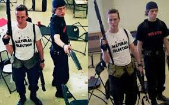
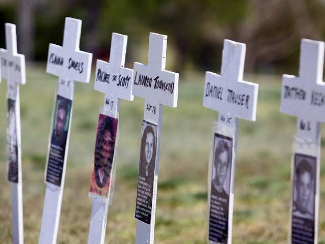

¿Qué sucedió?
El 20 de abril de 1999, dos estudiantes, Eric Harris y Dylan Klebold, llevaron a cabo un tiroteo en la escuela secundaria Columbine, en Colorado, Estados Unidos. Los atacantes dispararon contra estudiantes y personal escolar, provocando numerosas víctimas. Después del ataque, ambos murieron por suicidio. El suceso tuvo un enorme impacto en Estados Unidos y generó debates sobre la seguridad escolar, el acceso a las armas y la prevención de la violencia juvenil
El tiroteo ocurrió el 20 de abril de 1999 en la escuela secundaria Columbine, ubicada en Littleton, Colorado, Estados Unidos, a finales del siglo XX.

Lo que está documentado
* Los responsables fueron identificados como Eric Harris, de 18 años, y Dylan Klebold, de 17.
* Durante el ataque murieron 12 estudiantes y un profesor, además de los dos atacantes, que se suicidaron.
* Más de 20 personas resultaron heridas durante el tiroteo.
* Los investigadores encontraron que los atacantes habían planeado el ataque con anticipación y habían colocado explosivos que no detonaron como esperaban.
* La investigación examinó sus escritos, sus acciones previas y posibles fallas en la detección de las amenazas
Lo que aún no se sabe
Aunque se conocen muchos detalles sobre la planificación del ataque, no existe una explicación única y definitiva que permita atribuirlo a una sola causa. Se han debatido factores como las relaciones sociales, los problemas personales, la violencia y el acceso a las armas. Sin embargo, no se ha demostrado que el acoso escolar, la música o los videojuegos, por sí solos, expliquen el crimen. Sigue siendo importante estudiar cómo se combinaron los distintos factores y qué señales pudieron haberse detectado antes.
